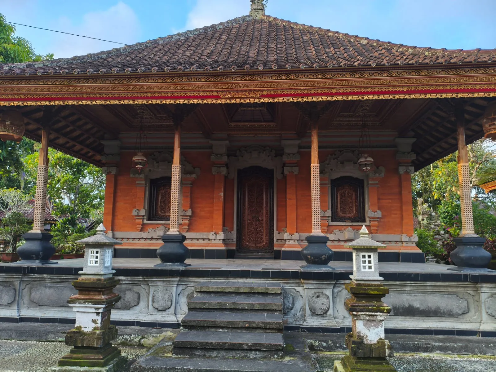
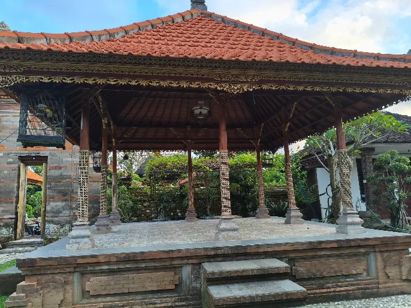
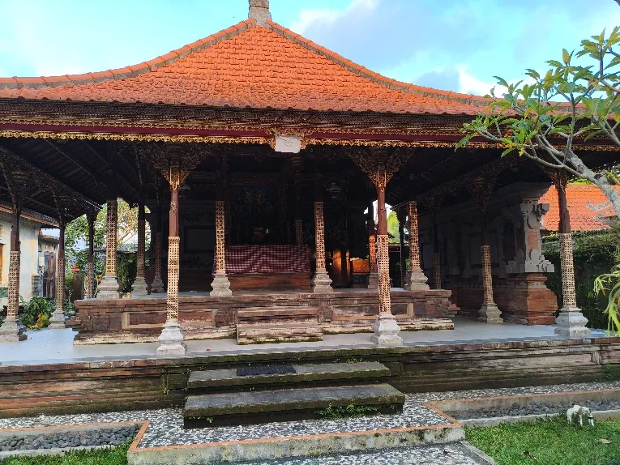
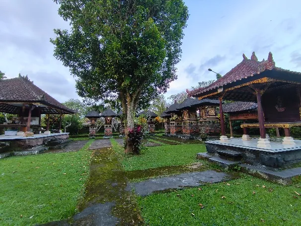
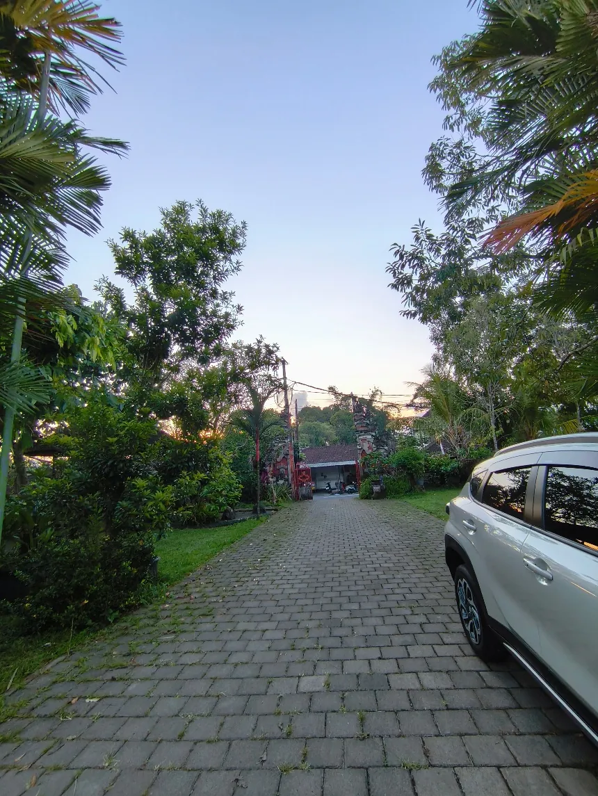
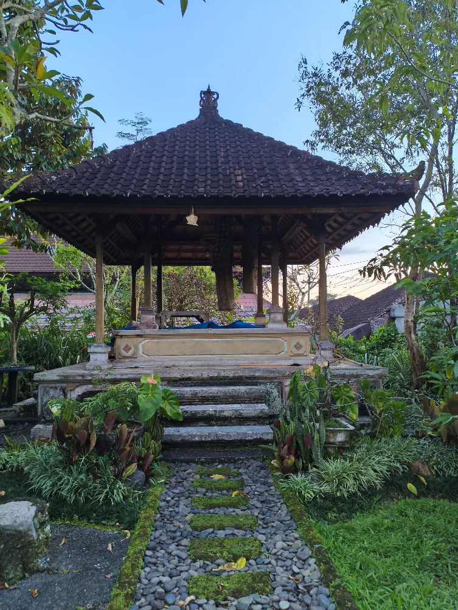

DOKUMENTASI VISUAL
Galeri Puri
Dokumentasi visual bangunan dan lingkungan Puri Ageng Marga yang tersedia dari bahan penelitian.









DOKUMENTASI VISUAL
Dokumentasi visual bangunan dan lingkungan Puri Ageng Marga yang tersedia dari bahan penelitian.





